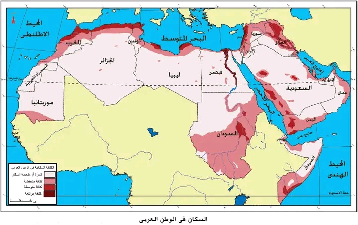

تمارين – السكان والمشكلات السكانية بالعالم العربي
- النمو الديمغرافي:
- تزايد عدد السكان في مجال معيّن خلال فترة زمنية محدّدة، ويُقاس بمعدل النموّ السنوي (‰). بلغ معدل النمو الديمغرافي بالعالم العربي 2,6% بين 2000 و2017 مقابل 1,2% عالميًا.
- نسبة الإعالة:
- نسبة الأفراد خارج قوة العمل (أقل من 15 سنة وأكثر من 65 سنة) الذين يعولهم كل 100 فرد من أفراد القوى العاملة. وهي مؤشر للأعباء الاقتصادية، وبلغت حوالي 60% بالعالم العربي (95,5% في اليمن مقابل 31% في الإمارات).
- الانتقال الديمغرافي:
- النموذج النظري لتطور المجموعات السكانية من نظام تقليدي ذي مواليد ووفيات مرتفعة إلى نظام حديث ذي مواليد ووفيات منخفضة، ويمرّ بعدة أطوار.
- مؤشر التنمية البشرية:
- مؤشر مركّب يقيس مستوى التنمية البشرية في بلد ما بالاعتماد على أمل الحياة عند الولادة ونسبة التمدرس والدخل الفردي، ويتراوح بين 0 و1.
| السنة | 1950 | 1970 | 1990 | 2000 | 2010 | 2024 |
|---|---|---|---|---|---|---|
| عدد السكان (بالمليون نسمة) | 79 | 128 | 218 | 284 | 357 | 464 |
المصدر: تقارير الأمم المتحدة والبنك العالمي


يتوزع سكان العالم العربي بشكل شديد التفاوت: يتركز ثلثا السكان بالجناح الشرقي، وتتباين الكثافات بين 1805 نسمة/كم² بالبحرين و4 نسمات/كم² بليبيا. ويعود هذا التفاوت إلى ثلاثة أصناف من العوامل: عوامل طبيعية (المناطق الممطرة ذات الترب الخصبة والسهول المجاورة للأودية والأنهار والسواحل والواحات)، وعوامل تاريخية وسياسية (المناطق الجبلية كجبال القبائل بالجزائر وسياسة التهجير بلبنان والأردن)، وعوامل اقتصادية (الثروات الطاقية بأقطار الخليج التي توفّر مواطن شغل).
- مقدمة: تونس من أوائل الدول العربية في اعتماد سياسة سكانية.
- تطوير: أولاً. المحتوى التشريعي للسياسة (مجلة الأحوال الشخصية)؛ ثانياً. برنامج التنظيم العائلي والتحسن الصحي والتعليمي؛ ثالثاً. النتائج الديمغرافية (تراجع الإنجاب، النمو الطبيعي 1,4%).
- خاتمة: سياسة رائدة مكّنت تونس من التحكم في نموّها السكاني.
مقدمة
تُعدّ تونس من أوائل الدول العربية التي اعتمدت سياسة سكانية واضحة منذ الاستقلال، مبنية على تشريعات جريئة وبرامج صحية وتعليمية.
تطوير
أولاً. الإطار التشريعي
أصدرت تونس مجلة الأحوال الشخصية سنة 1956 التي أقرّت منع تعدد الزوجات وتحديد سنّ الزواج للإناث بـ 15 سنة (17 سنة منذ 1964)، وأجازت الإجهاض سنة 1965، واقتصت المنح العائلية على ثلاثة أطفال فقط.
ثانياً. البرامج الصحية والاجتماعية
اعتُمد برنامج التنظيم العائلي سنة 1964 وتزامن ذلك مع تحسين خدمات الصحة والتعليم وارتفاع نسبة التحضّر.
ثالثاً. النتائج
مكّنت هذه السياسة من تراجع مؤشر الإنجاب إلى أدنى مستوى في العالم العربي، ومن انخفاض نسبة النمو الطبيعي إلى 1,4% سنة 2017، وتراجع نسبة الفئة الأقل من 15 سنة إلى 26%.
خاتمة
هكذا تُعدّ السياسة السكانية التونسية تجربة رائدة مكّنت البلاد من التحكم في نموّها السكاني وتحسين مؤشراتها الاجتماعية، وإن بقيت تحديات البطالة وضعف التأهيل قائمة.
الخط الزمني: 1956: مجلة الأحوال الشخصية ...